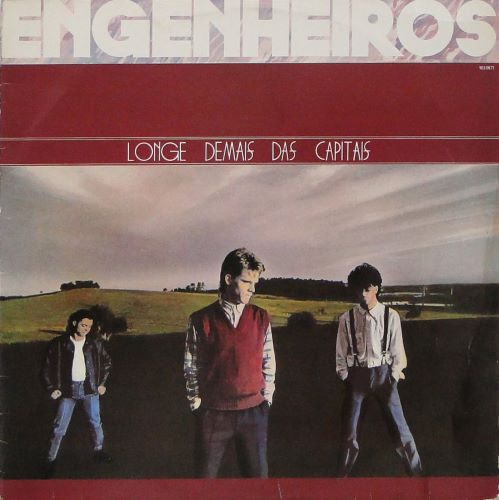

Discografia Completa

Longe Demais das Capitais (1986)
- 1. Toda Forma de Poder
- 2. Somos Quem Podemos Ser
- 3. Infinita Highway
- 4. Era um Garoto
- 5. Pra Ser Sincero

A Revolta dos Dândis (1987)
- 1. Refrão de Bolero
- 2. Pintura Íntima
- 3. Eu Quero Ser o Seu Blues
- 4. Às Vezes
- 5. Toda Forma de Poder

O Papa é Pop (1990)
- 1. O Exército de um Homem Só
- 2. Pra Ser Sincero
- 3. Somos Quem Podemos Ser
- 4. Infinita Highway
- 5. Era um Garoto
Discografia completa inclui 12 álbuns de estúdio, 4 ao vivo e diversas coletâneas.